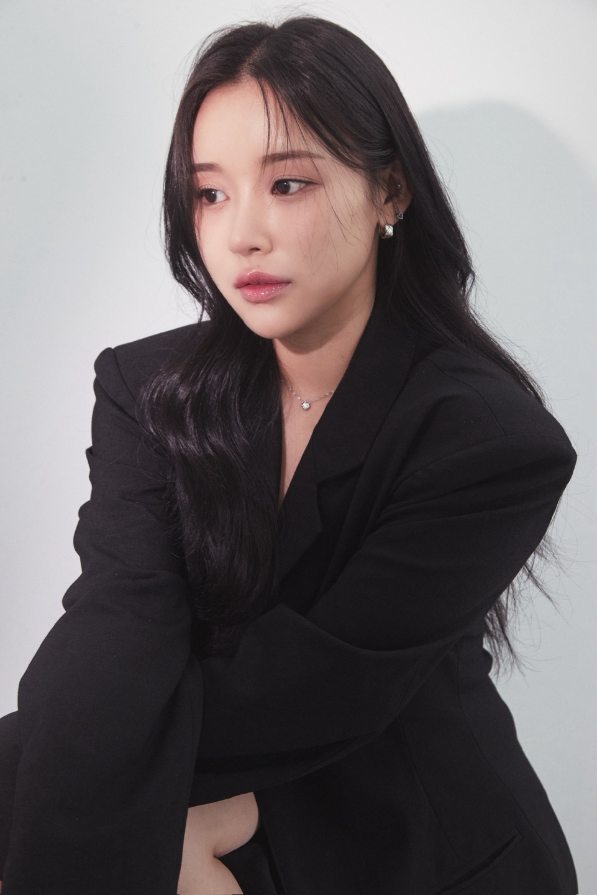

먼저 충분히 듣고
원하는 분위기와 평소 메이크업 습관을 상담합니다.
BEAUTYDATE · BROW DESIGN OFFER
1:1 디자인 상담부터 시술 전 디자인 확인까지, 조수연 원장이 함께합니다.
외국인 고객 눈썹 시술가 USD $155~
01 — OUR DESIGN
Designed around your features얼굴형과 눈매, 기존 눈썹의 결을 살펴 지금의 인상에 자연스럽게 어울리는 디자인을 찾습니다.
원하는 분위기와 평소 메이크업 습관을 상담합니다.
시술 전 눈썹 모양을 확인하고 조율합니다.
확인한 디자인을 바탕으로 세심하게 시술합니다.
02 — DOES THIS FEEL FAMILIAR?
A little more ease, every morning매일 반복되는 작은 불편부터, 처음 시술을 앞둔 걱정까지 편하게 이야기해 주세요.
양쪽 눈썹 모양을 맞추기 어려워요.
빈 곳을 채우다 보면 인상이 진해져요.
매일 그리는 시간을 조금 줄이고 싶어요.
처음이라 어떤 모양이 어울릴지 모르겠어요.
서두르지 않고 상담한 뒤, 얼굴과 취향에 맞는 방향을 함께 찾아갑니다.
03 — SELECTED WORKS
A collection of real brow designs실제 고객의 시술 결과를 살펴보세요.
피부와 기존 눈썹에 따라 결과는 달라질 수 있습니다.
실제 시술 사례이며, 결과는 피부와 기존 눈썹 상태에 따라 다를 수 있습니다.
04 — OUR PROCESS
Considered at every step원하는 분위기와 현재 눈썹 상태, 피부 컨디션을 먼저 확인합니다.
얼굴의 비율과 눈매에 맞춰 디자인하고, 시술 전 충분히 조율합니다.
확정한 디자인을 바탕으로 차분하게 시술을 진행합니다.
시술 후 관리 방법과 리터치 관련 내용을 안내해 드립니다.
05 — FAQ
Good to know before booking시술 전 충분히 상담하고, 궁금한 점은 예약 전에 편하게 문의하실 수 있어요.
상담 후 디자인을 제안하고, 시술 전에 함께 확인하고 조율합니다.
피부와 기존 눈썹 상태에 따라 결과에 차이가 있을 수 있습니다.
네이버 예약 또는 카카오채널로 문의해 주세요. 전화 문의도 가능합니다.
리터치 적용 기간과 비용은 예약 전에 카카오채널로 확인해 주세요.
06 — MEET THE DIRECTOR
Beautydate, Busan
DIRECTOR · SUYEON CHO
반영구 시술 12년, 샵 운영 8년의 경험을 바탕으로 고객 한 분 한 분의 얼굴에 어울리는 디자인을 고민합니다. 충분히 듣고, 함께 확인하고, 세심하게 마무리합니다.
07 — A GOOD PLACE TO START
Who this may suit08 — VISIT BEAUTYDATE
We look forward to meeting youBUSAN · KOREA
BEAUTYDATE · BUSAN
예약 링크와 카카오톡 채널을 통해 편하게 문의해 주세요.